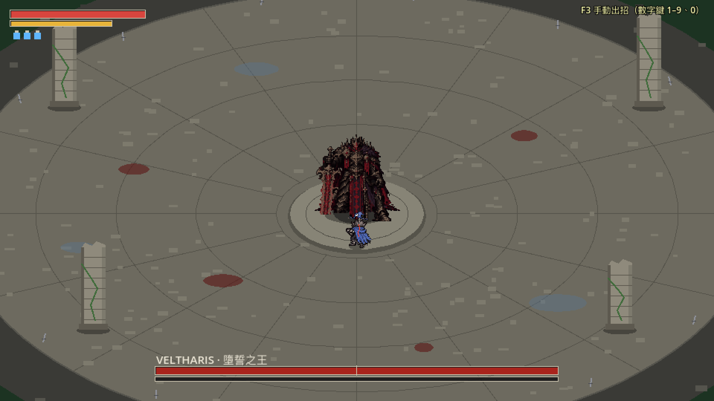
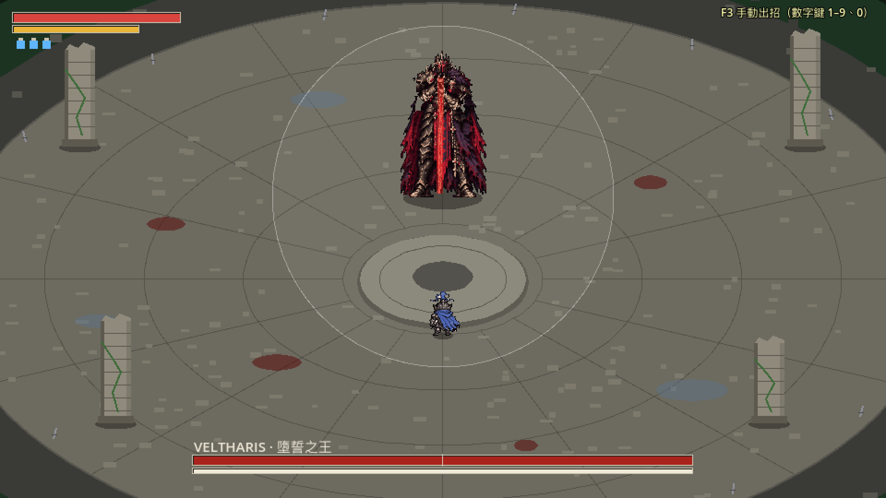
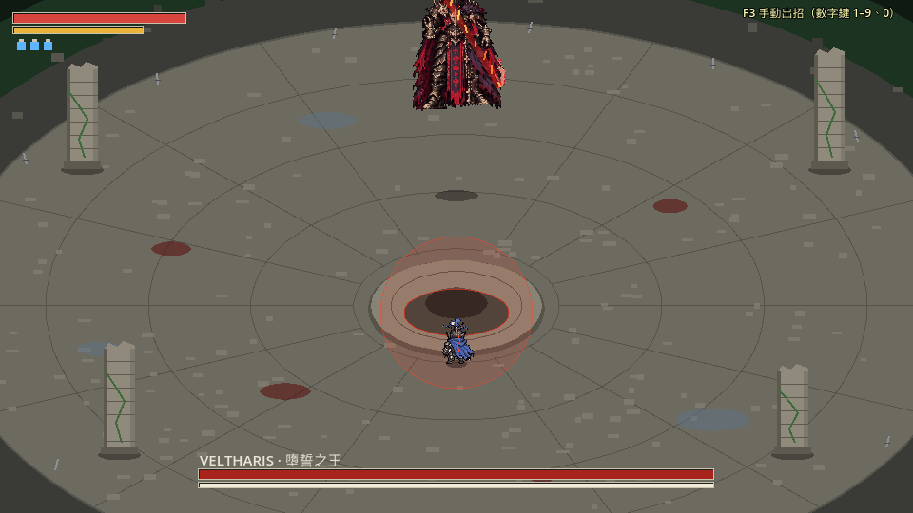
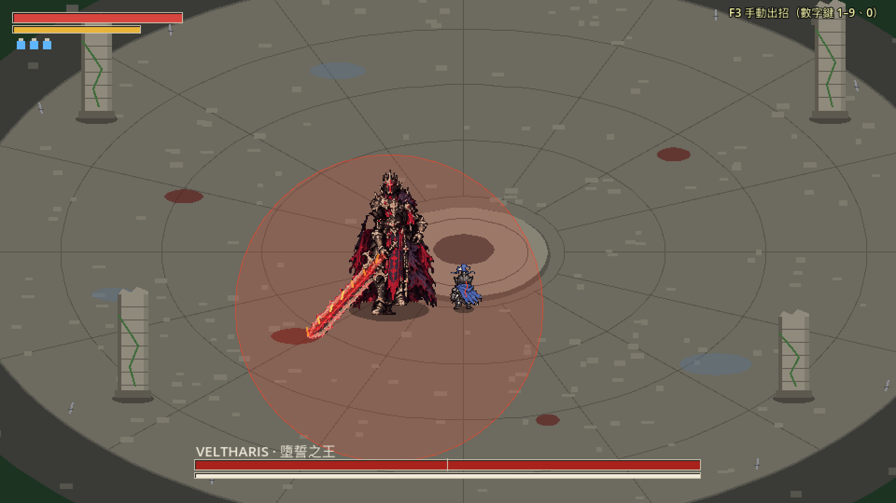
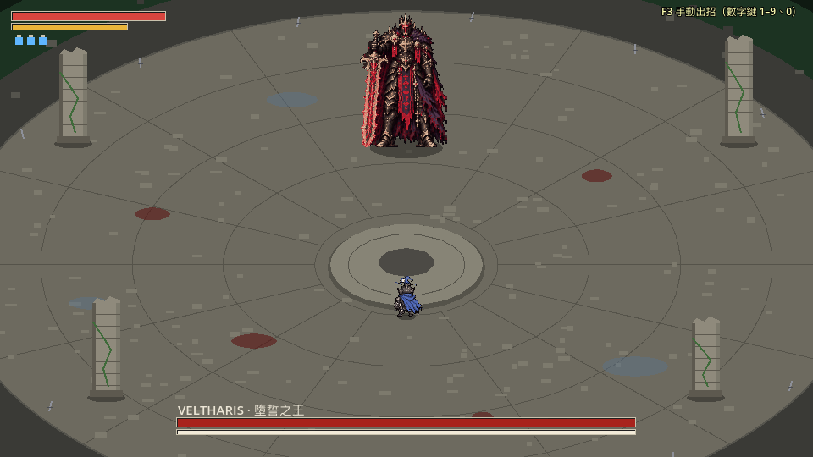
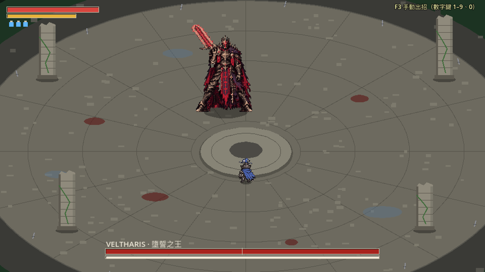
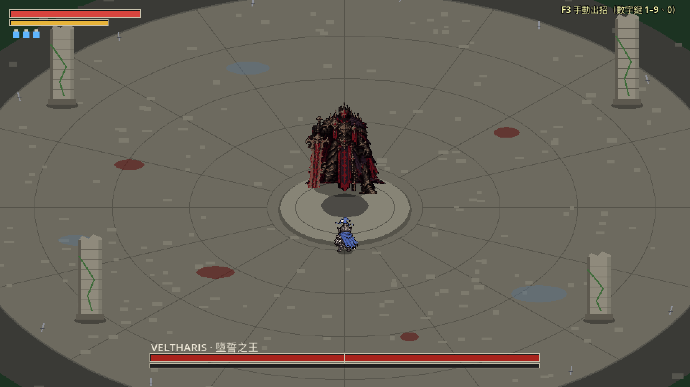
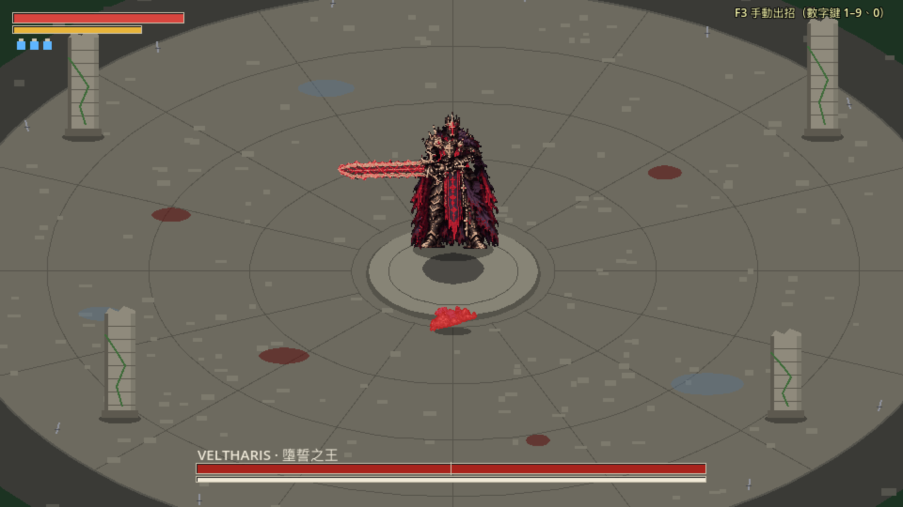
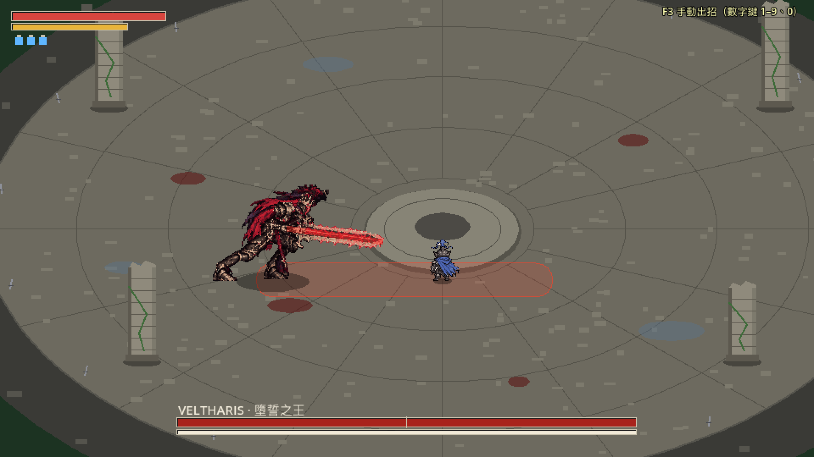
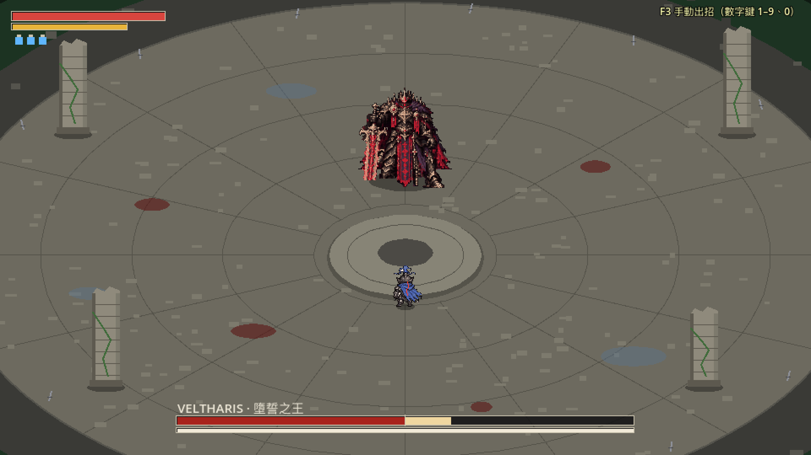

這些是在真正的遊戲場景裡錄的：Boss 照腳本出每一招、被彈開、失衡、短僵直、死亡、被處決、轉場，每一格都是遊戲當下畫出來的畫面，60 格／秒，就是遊戲的速度（以 Boss 為中心裁切，放大 2 倍）。被打中時畫面會停一下（頓幀），那是遊戲本來的效果。劍上的紅光預兆、頭盔的十字紅光、頭上的星形、第二階段的火焰、影子、落點紅圈、灰燼淡出是程式畫的特效。主角這次不動（只看 Boss）。標橘色框的是這次新做的銜接，請特別看。
站著、走路、停下
劍立在地上站著 → 走（起步時劍從身前往上繞、扛到肩上）→ 側移 → 停下（劍放回地上）→ 再起步、側移、停下。走路照實際走的距離換圖（每 4px 一張），所以腳不會滑。
王權橫掃
從扛劍站著出手，砍完回到扛劍站著。起手時劍上的紅光是預兆（程式畫的）。
從走路直接出招
走到一半直接出招：先播「從移動出招」的開頭（腳收回、劍往上提），再接橫掃本身。遊戲裡 Boss 常常這樣出招。
雙斬
第二刀前往前踏一步（遊戲把 Boss 往前移，精靈圖跟著對齊）。
快斬二連
快斬三連（上挑）
墜誓下劈
墜誓下劈（延遲版）
舉到最高點停住 0.6 秒：停住期間畫面完全不動（★8），劍紅白閃爍、符文輪流亮。
裁決突刺
灰燼衝擊
插劍前頭盔十字閃一下紅光（淡入淡出、橫寬直窄），頭上出現危險預兆的星形。
三斬（二階段）
劍上有第二階段的火焰（程式畫的）。
雙重衝擊（二階段）
灰燼迴旋（二階段）
墜王之躍（二階段）
騰空的高度畫在圖裡，地上的影子變小；紅圈是落點。
被完美彈返
砍到那一刻被彈開：播這一招自己的被彈開，最後回到扛劍站著。
出招中失衡（新做的銜接）新
起手時韌性被削光：被打的一震（畫面停一下、身體變暗）→ 劍插到右手邊、跪下 → 跪著喘 3 秒 → 自己站起來（遊戲接著就開始走，所以起身加快）→ 起步走。
收招中短僵直（新做的銜接）新
收招時被重擊打中：往後一震，照這一招自己收劍的路線在 0.3 秒內回到扛劍站著。
出招中死亡（新做的銜接）新
突刺起手時被打死：一震 → 插劍跪下 → 往前垂 → 化為灰燼消散（程式做的淡出）。
迴旋轉到一半失衡（新做的銜接）新
順著原本的轉向把那一圈轉完才插劍跪下（倒轉回去劍會掃過身體）。這段比較長，請看會不會覺得他「被打斷了還在轉」。
墜王之躍落地後失衡（新做的銜接）新
劍在背上：先伸手到肩後拔劍、舉起、往前放下插地，再跪下。比一般的長。
被處決、起身
失衡跪下 → 主角處決（白色閃光）→ 倒地的姿勢 → 起身，劍立在地上站著。
階段轉場
HP 降到一半：快速跪下、披風翻飛、起身。
整個畫面（遊戲的 1 倍）









